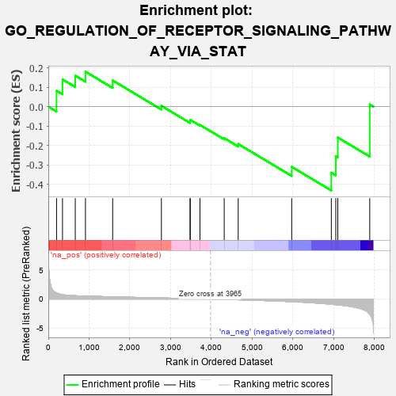
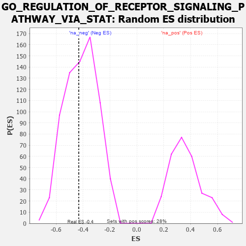

| | | Dataset | 7d |
| Phenotype | NoPhenotypeAvailable |
| Upregulated in class | na_neg |
| GeneSet | GO_REGULATION_OF_RECEPTOR_SIGNALING_PATHWAY_VIA_STAT |
| Enrichment Score (ES) | -0.43172783 |
| Normalized Enrichment Score (NES) | -1.0460141 |
| Nominal p-value | 0.42339832 |
| FDR q-value | 0.80689275 |
| FWER p-Value | 1.0 |
Table: GSEA Results Summary

Fig 1: Enrichment plot: GO_REGULATION_OF_RECEPTOR_SIGNALING_PATHWAY_VIA_STAT
Profile of the Running ES Score & Positions of GeneSet Members on the Rank Ordered List
| PROBE | GENE SYMBOL | GENE_TITLE | RANK IN GENE LIST | RANK METRIC SCORE | RUNNING ES | CORE ENRICHMENT | | 1 | BCL3 | | | 202 | 1.047 | 0.0818 | No |
| 2 | CNOT7 | | | 348 | 0.750 | 0.1404 | No |
| 3 | HES5 | | | 661 | 0.571 | 0.1597 | No |
| 4 | NLK | | | 911 | 0.504 | 0.1800 | No |
| 5 | PTPRT | | | 1578 | 0.378 | 0.1350 | No |
| 6 | ELP2 | | | 2773 | 0.187 | 0.0040 | No |
| 7 | HGS | | | 3476 | 0.080 | -0.0760 | No |
| 8 | CDK5 | | | 3480 | 0.080 | -0.0681 | No |
| 9 | HSF1 | | | 3718 | 0.039 | -0.0940 | No |
| 10 | PIGU | | | 4313 | -0.061 | -0.1623 | No |
| 11 | FGFR3 | | | 4656 | -0.129 | -0.1921 | No |
| 12 | CENPJ | | | 5968 | -0.460 | -0.3098 | No |
| 13 | DOT1L | | | 6939 | -0.897 | -0.3399 | Yes |
| 14 | PIBF1 | | | 7049 | -0.966 | -0.2547 | Yes |
| 15 | CSH1 | | | 7098 | -0.995 | -0.1589 | Yes |
| 16 | FYN | | | 7881 | -2.622 | 0.0113 | Yes |
Table: GSEA details [plain text format]

Fig 2: GO_REGULATION_OF_RECEPTOR_SIGNALING_PATHWAY_VIA_STAT: Random ES distribution
Gene set null distribution of ES for GO_REGULATION_OF_RECEPTOR_SIGNALING_PATHWAY_VIA_STAT